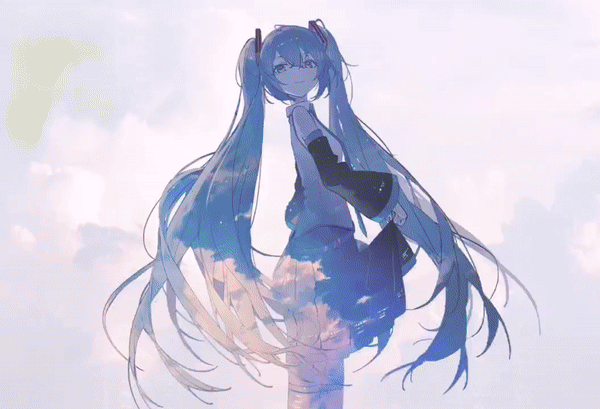

VIRTUAL SINGER / VISUAL ARCHIVE / 01
HATSUNEMIKU
声音没有固定形状，所以每一位创作者都能让她重新诞生。
THE FIRST SOUND FROM THE FUTURE01CREATE TOGETHER39SONGS WITHOUT BORDERS∞0139∞
01 ARCHIVE
一束声音，
无数种未来。
初音未来不只是一套声库，也是一种开放式的共同创作。旋律、绘画、舞台、程序与社区不断为同一个声音赋予新的轮廓。
- 2007
- 软件发行
- 39
- 标志数字
- ∞
- 共同创作
02 SVG SIGNAL
未来声线
MIKU / VISUAL SYNTHESIZER

03 MOTION
让静止的画面
开始呼吸。
青绿并不是唯一的答案。她可以轻盈、冷冽、热烈，也可以成为每个创作者眼里完全不同的光。
04 GALLERY
画廊
COLOR / STAGE / SKY / MEMORY
05 SOUND ARCHIVE